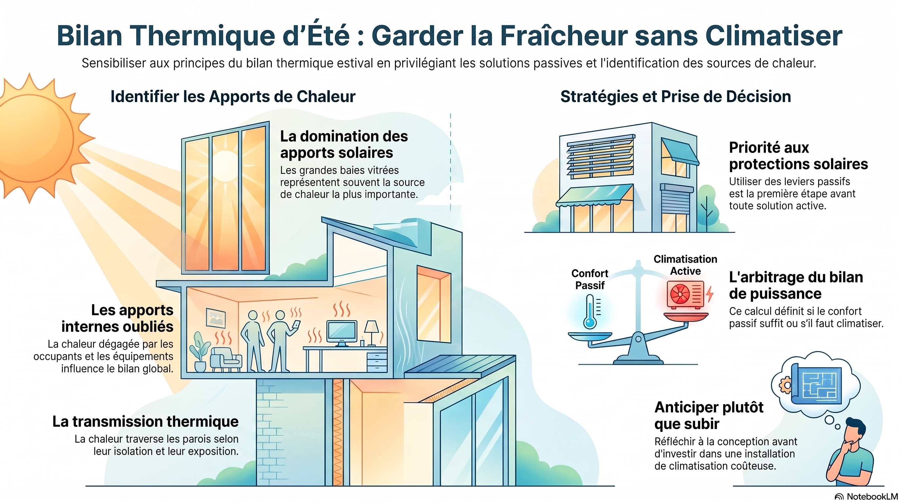
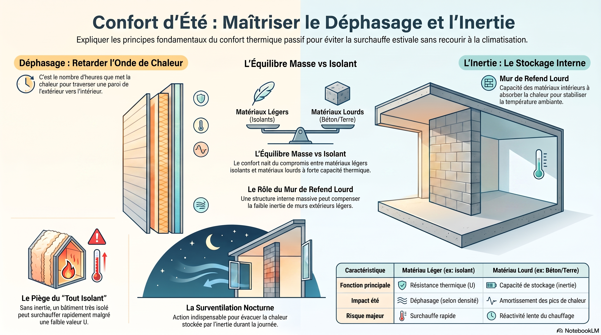
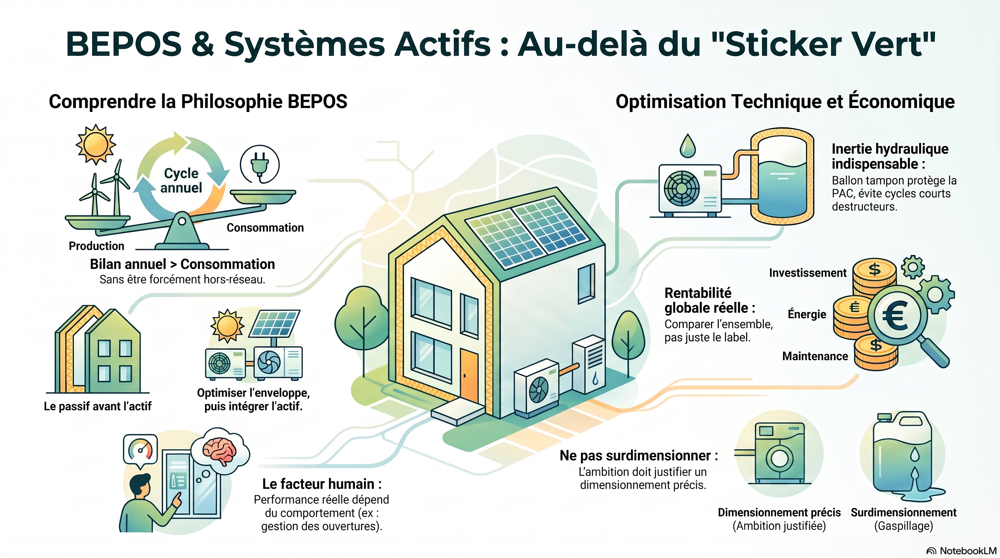
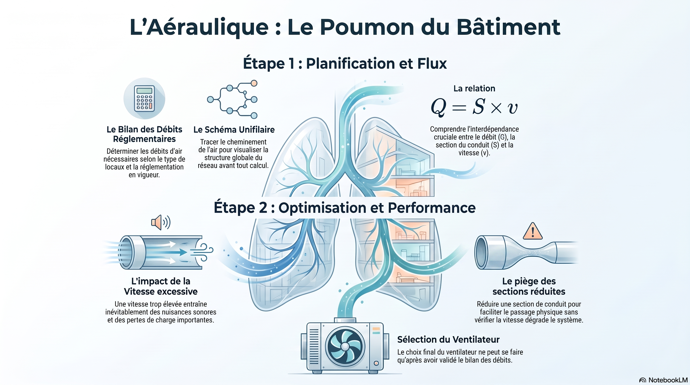
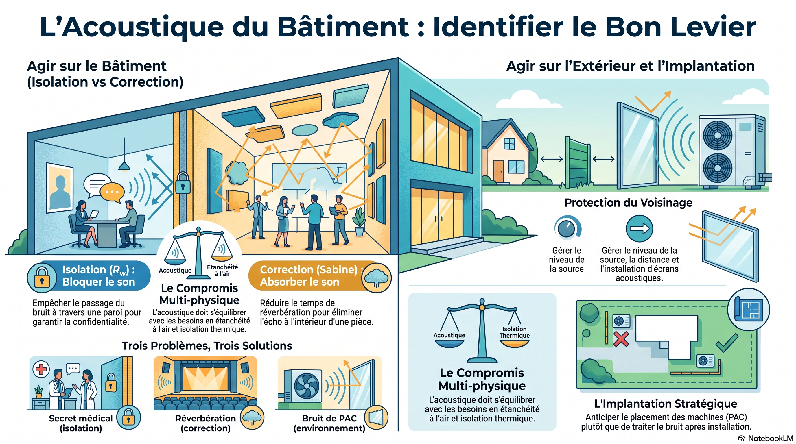

R 4-8
Physique et énergétique du bâtiment 2
Été, inertie, BEPOS, aéraulique, acoustique
Entraînement : Maison de santé de Lironde
Cliquez une image pour l’ouvrir en grand.





2e année · BUT GC-CD
Physique et énergétique du bâtiment 2. Ouvrez un laboratoire, consultez les infographies, ou lancez les vidéos lorsqu’un lien est proposé.
R 4-8
Été, inertie, BEPOS, aéraulique, acoustique
Entraînement : Maison de santé de Lironde
Cliquez une image pour l’ouvrir en grand.




